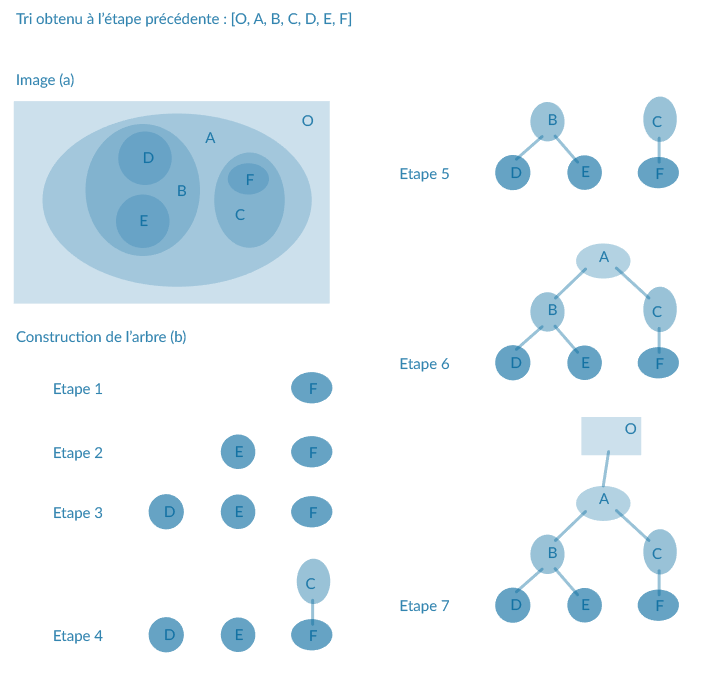
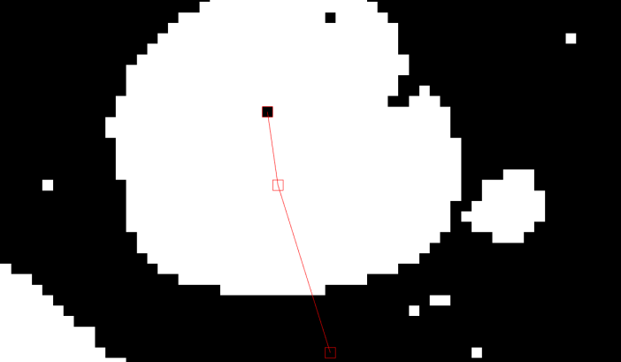

PROJECT REALISED FOR THE IMAGE PROCESSING AND DISCRETE GEOMETRY COURSE

Calculation of a Tree of Shapes

This project calculates the tree of shapes of a 2D-image in linear time, and is based on the following research study: A quasi-linear algorithm to compute the tree of shapes of nD images produced by T. Géraud, E. Carlinet, S. Crozet et L. Najman en 2013. It has been realised by a three-person team in C++ language.
